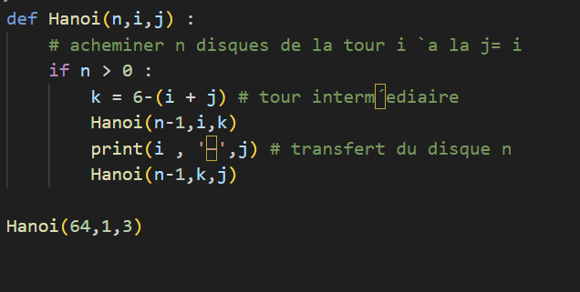
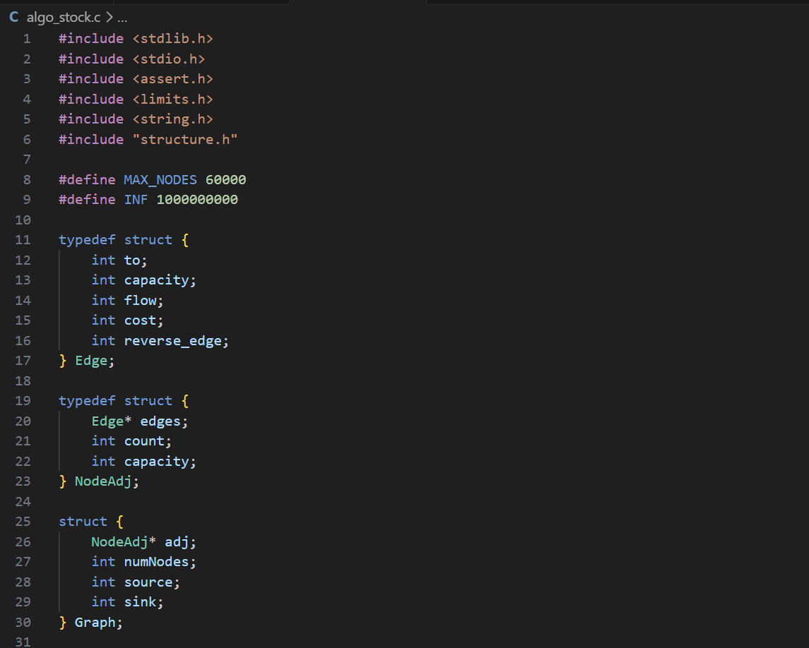

Compétence 1 : RÉALISER
Développer des applications informatiques (Niveau 2)
Ma vision de la compétence
Au cœur de mon futur métier, la compétence Réaliser va bien au-delà de sa définition officielle qui consiste à concevoir, coder, tester et intégrer une solution informatique. Au fil de mon parcours, j'ai appris qu'il ne suffit pas d'écrire un code fonctionnel : l'enjeu principal est de traduire un besoin concret en une architecture logicielle pérenne, lisible et maintenable.
Auto-évaluation & Regard critique
En prenant du recul sur mes méthodes de travail, je réalise que ma plus grande avancée concerne le débogage et l'écriture de tests. Là où une erreur me bloquait auparavant, j'ai développé le réflexe d'analyser activement les logs et de structurer ma documentation. Aujourd'hui, mon principal axe d'amélioration se situe au niveau de l'optimisation initiale : mon objectif est de concevoir un code performant et propre dès les premiers jets.
Apprentissages critiques validés
- Élaborer et implémenter les spécifications fonctionnelles à partir d'exigences
- Appliquer des principes d'accessibilités et d'ergonomie
- Adopter des bonnes pratiques de conception et de programmation
- Vérifier et valider la qualité de l'application par les tests
Traces et Preuves d'apprentissage

SAÉ : Tableau Lego
Architecture logicielle modulaire complexe (PHP, Java, C, PostgreSQL). Pour voir en détail le projet voir ici
Descriptions et Notions abordées
Ce projet constitue la SAÉ (Situation d'Apprentissage et d'Évaluation) centrale de ma deuxième année de BUT. L'objectif global est de concevoir un site e-commerce complet permettant à un client de téléverser une image personnelle afin de la transformer en un tableau physique composé de briques LEGO.
Langages : PHP (Objet), Java, C, SQL, HTML/CSS Outils : Git/GitHub, Environnement Linux
Compétence 2 : OPTIMISER
Optimiser des applications informatiques (Niveau 2)
Ma vision de la compétence
Maîtriser l'optimisation marque un véritable tournant dans mon approche du développement. Au-delà de la simple livraison d'un produit fonctionnel, l'enjeu est de concevoir des solutions rapides, ergonomiques et respectueuses de l'environnement (Green IT). Concrètement, cela exige une sélection rigoureuse des structures de données et un affinement de la logique algorithmique afin de minimiser l'empreinte technique et de s'adapter intelligemment aux contraintes matérielles.
Auto-évaluation & Regard critique
Grâce à de solides bases en algorithmique, je suis aujourd'hui capable de diagnostiquer efficacement les failles de performance ou les surcharges mémoire sur mes applications. Néanmoins, mon approche reste encore trop souvent réactive : je privilégie généralement une première version fonctionnelle avant de procéder à son refactoring. Mon véritable défi technique est désormais d'inverser cette tendance, en intégrant nativement les contraintes d'optimisation dès la phase d'architecture et de conception.
Apprentissages critiques validés
- Analyser et optimiser une application.
- Profiler, analyser et justifier le comportement d'un code existant.
- Comprendre les enjeux et moyens de sécurisation des données et du code
Traces et Preuves d'apprentissage

Cours d'optimisation
Etude théorique et pratique sur la réduction drastique de la complexité sur des problèmes mathématiques de Fibonnacci et de Hanoi
Descriptions et Notions abordées
Ce projet s'articule autour de l'analyse approfondie et de l'optimisation d'algorithmes classiques reconnus pour leur lourdeur de calcul dans leurs implémentations naïves. L'objectif principal était de démontrer comment une refonte de l'approche algorithmique permet de passer d'un temps d'exécution exponentiel à des temps d'exécution linéaires ou quasi-instantanés.
language : Python

Optimisation language C
Optimisation sur le pavage d'une plaque de brique avec l'algorithme BFS
Descriptions et Notions abordées
Optimisation du pavage d'une plaque de brique avec l'algorithme BFS afin d'optimiser le coût de brique à utiliser
language : C
Compétence 3 : ADMINISTRER
Déployer des services dans une architecture réseau (Niveau 2)
Ma vision de la compétence
En m'appropriant l'administration système et réseau, j'ai franchi le cap séparant le simple développeur de l'architecte d'infrastructure. Comprendre les rouages des OS et les flux de communication est devenu pour moi indispensable pour déployer, sécuriser et maintenir efficacement mes propres applications.
Auto-évaluation & Regard critique
C'est en naviguant dans l'environnement Linux, à travers l'automatisation et le terminal, que je tire le meilleur parti de mes compétences techniques. Je m'attache à construire un socle de connaissances robuste, non seulement pour concevoir, mais surtout pour déployer, sécuriser et maintenir l'ensemble de mes projets logiciels avec une totale autonomie.
Apprentissages critiques validés
- Concevoir et développer des applications communicantes.
- Utiliser des serveurs et des services réseaux.
- Sécuriser les services et données d'un système.
Traces et Preuves d'apprentissage
Cours de reseau
Sécurisation des réseaux à l'aide de TP
Descriptions et Notions abordées
Lors des TP j'ai pu apprendre et mettre en pratique mes cours de sécurisation des réseaux en oeuvre.
Outil : Netkit
Dual Boot
Réalisation d'un dual boot afin de comprendre son fonctionnement
Descriptions et Notions abordées
Installation d'un dual boot sur une machine, afin de comprendre comment fonctionne cette dernière et comprendre l'enjeu des différents noyaux d'OS
Compétence 4 : GÉRER
Optimiser une base de données, interagir avec une application et mettre en œuvre la sécurité (Niveau 2)
Ma vision de la compétence
La modélisation de l'information constitue la véritable colonne vertébrale de tout logiciel. Au travers de la compétence Gérer, j'ai pris conscience que l'exploitation d'une base de données dépasse largement la simple extraction. Mon rôle consiste à bâtir des architectures robustes garantissant l'intégrité et la sécurité
Auto-évaluation & Regard critique
J'ai développé une grande aisance avec les bases de données relationnelles, dont j'affectionne tout particulièrement la rigueur structurelle. Cependant, mon initiation au NoSQL a bousculé mes certitudes techniques. Je suis encore actuellement dans une phase d'adaptation pour m'imprégner pleinement de cette logique documentaire. Je m'investis dans cet apprentissage continu afin de forger mon instinct d'architecte logiciel et de savoir arbitrer efficacement entre ces deux mondes.
Apprentissages critiques validés
- Optimiser les modèles de données de l'entreprise.
- Assurer la confidentialité des données (intégrité et sécurité).
- Organiser la restitution de données à travers la programmation et la visualisation.
Traces et Preuves d'apprentissage

Projet de facturation
Réalisation d'une application sous le déroulement de la méthode AGILE Pour voir en détail le projet voir ici
Descriptions et Notions abordées
Dans le cadre de la modernisation du système de facturation d'une entreprise (passage d'un logiciel local à une application Web automatisée), je suis intervenu en tant que maîtrise d'œuvre (MOE). Mon enjeu majeur a été de concevoir une architecture de base de données relationnelle solide et pérenne, capable d'ingérer et de structurer l'intégralité de l'historique client fourni sous forme d'extractions brutes (CSV).
Technologies : SQL, Procédures stockées, Triggers, Vues, HTML/PHP (pour l'IHM).
Compétence 5 : CONDUIRE
Appliquer une démarche de suivi de projet informatique (Niveau 2)
Ma vision de la compétence
Pour moi, la gestion de projet constitue la véritable clé de voûte de notre métier de développeur. Je ne me limite plus à la simple production d'une solution : je m'investis dans la gestion stratégique du cycle de vie logiciel. J'ai appris à décrypter les exigences de la maîtrise d'ouvrage (MOA) pour orienter efficacement nos choix techniques en tant que maîtrise d'œuvre (MOE). Je mets un point d'honneur à rester agile face aux évolutions du besoin, avec pour unique but de fournir un produit parfaitement aligné avec la vision du client.
Auto-évaluation & Regard critique
Si l'écosystème Scrum et les User Stories ont décuplé mon efficacité collective, l'estimation précise des tâches reste mon défi majeur. J'ai encore parfois tendance à sous-évaluer la complexité technique, ce qui peut impacter la vélocité de nos Sprints. Aujourd'hui, je m'efforce d'affiner mes chiffrages techniques en anticipant beaucoup mieux la dette technique cachée.
Apprentissages critiques validés
- Identifier les processus présents dans une organisation en vue d'améliorer les systèmes d'information.
- Formaliser les besoins du client et de l'utilisateur.
- Identifier les critères de faisabilité d'un projet informatique.
- Définir et mettre en œuvre une démarche de suivi de projet.
Traces et Preuves d'apprentissage

Projet application Banquaire B2B
Réalisation d'une application sous le déroulement de la méthode AGILE Pour voir en détail le projet voir ici
Descriptions et Notions abordées
Ce projet est une mise en situation professionnelle complète pour une banque fictive (UGE). En tant qu'équipe de Maîtrise d'Œuvre (MOE), nous devions développer un portail Web permettant aux clients entreprises (commerçants, artisans) de consulter leurs activités monétiques, gérer leurs impayés et exporter des états financiers.
Méthodologie : Agile, Scrum, Kanban, Rôles (PO, SM, TL), Sprints, MOA / MOE.
Compétence 6 : COLLABORER
Situer son rôle et ses missions au sein d'une équipe informatique (Niveau 2)
Ma vision de la compétence
Conscient que la réussite d'un projet numérique repose avant tout sur le collectif, j'accorde une importance majeure à la communication et à l'entraide. Je suis parfaitement à l'aise avec les outils de travail en équipe (Git, gestionnaires de tâches) pour synchroniser nos efforts. Je suis convaincu qu'une bonne dynamique humaine est indispensable pour transformer nos compétences individuelles en une véritable force technique collective.
Auto-évaluation & Regard critique
Dans mes projets de groupe, je parviens à mettre en pratique mes compétences relationnelles pour faciliter nos échanges et maintenir la cohésion. Cependant, mon implication me pousse encore trop souvent à compenser le retard d'un coéquipier en réalisant ses tâches, au lieu de l'aider à monter en compétence. Mon objectif actuel est d'apprendre à mieux déléguer et à utiliser la revue de code (Peer Review) comme un véritable outil d'entraide, plutôt que de corriger les erreurs de mon côté.
Apprentissages critiques validés
- Comprendre la diversité, la structure et la dimension de l'informatique dans une organisation.
- Appliquer une démarche pour intégrer une équipe informatique au sein d'une organisation.
- Mobiliser les compétences interpersonnelles pour travailler dans une équipe informatique.
Traces et Preuves d'apprentissage

SAÉ : Unesco
Réalisation d'une application de médiation culturelle et numérique Pour voir en détail le projet voir ici
Descriptions et Notions abordées
Dans le cadre de notre formation, j'ai intégré un groupe de 5 étudiants pour réaliser un site web interactif pour l'UNESCO, spécifiquement dédié au patrimoine culturel de la ville de Kyoto. Ce projet nécessitait de croiser des compétences techniques (développement web) avec des enjeux de recherche documentaire, d'éducation et de direction artistique.